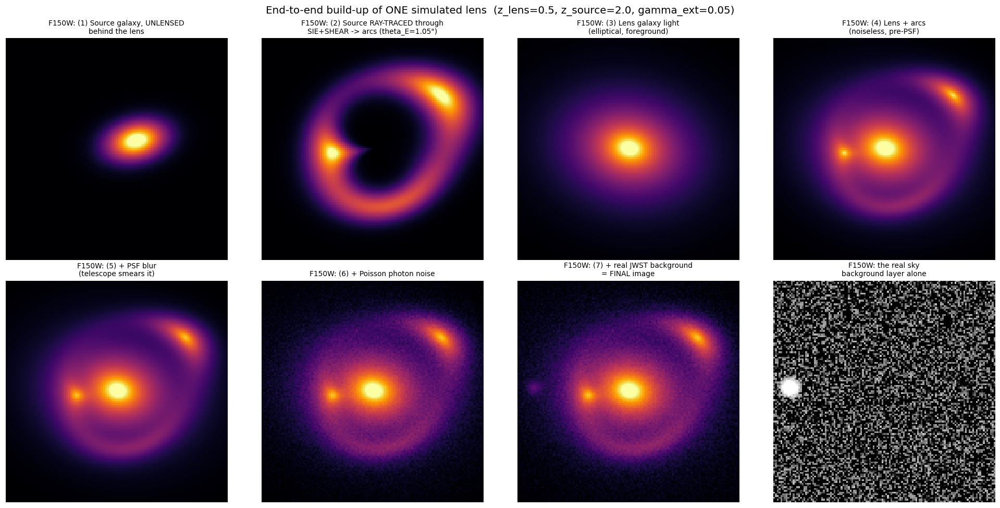
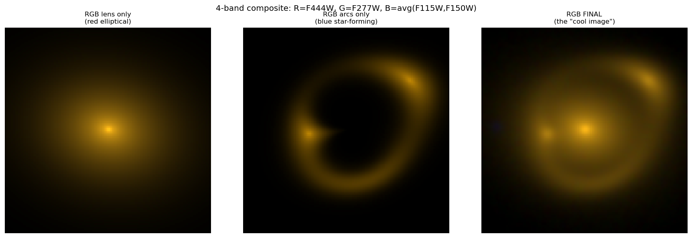
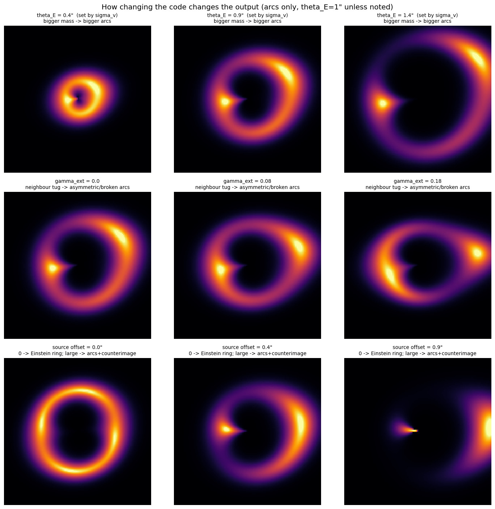

Premise: if a classifier can tell sims from real JWST data, the reasons why are a ranked to-do list for the simulator. We read the v8/v9 code looking for what such a classifier would exploit — before training anything.

1 · Six code-level predictions of what a discriminator would key on
2 · The experiment: which real data we compare against, and why that choice is the hard part
3 · Risks + what we need from you
Deliverable is feedback, not refined images: heatmaps, band ablations, and parameter correlations from a trained discriminator, handed back as evidence.
All from reading the code — each independently testable and independently fixable. Bars = guessed visibility to a 4-band patch discriminator.
Ellipticity frozen at (0.05, 0.02), shear at (0.02, 0.01) → one near-circular arc family. The sweep figure shows how much morphology that freezes out.
Always 0.25 × the lens-peak proxy; real ratios (COWLS photometry) span orders of magnitude.
Injected photons get uncorrelated Poisson noise; the surrounding mosaic noise is drizzle-correlated. Texture changes exactly where the sim content is.
Mass model pinned to image center; the real galaxy is only near center → arcs can curve around a point offset from the visible lens.
Per-band-normalized source stamps × one analytic SED = same morphology everywhere; real star-forming sources are clumpier/bluer in blue bands.
v8 draws σv independently of the scene. v9's Faber–Jackson fix gives us a built-in experiment: D should find v9 measurably harder than v8.


Real sky has ~no strong lenses, and only lensed sims contain sim pixels. So lensed sims vs random cutouts trains a lens detector — ~100% accuracy, zero insight.
Lensed sims vs real lens cutouts at the 440 COWLS positions — same mosaics, same depth, both piles have lens + arcs → D is forced to judge arc realism. Gate: a real-vs-real null control that must score ~50%, or our pipeline is biased.
The coordinates are already in git — we extract the pixels on NERSC. 242 positions fall inside the COSMOS mosaic we already have on disk (zero downloads).
Plus sample multipliers: lensed-only generation (removes the --n 92 cap), fresh Poisson re-realizations from the saved noiseless arcs, ~80 discriminator patches per 630-px image, 8× dihedral augmentation.
| Step | Effort |
|---|---|
| Scene + COWLS extraction scripts | a little |
| Null control + PCA baseline | a little |
| Discriminator + readout | a lot |
| Iterating fixes with Nate | ongoing, moderate per cycle |
| Risk | How it bites | Mitigation |
|---|---|---|
| Scene memorization | Any network memorizes a small background pool; accuracy becomes fiction. | Split by scene ID (never random); grow the pool 46 → 242 → 1,015+; arc-centered crops. |
| Only ~440 real lenses, ever | Nature's limit — deep nets overfit at N≈10². | Small D, patch-level training, 8× augmentation, k-fold CV, frozen-feature linear probes. |
| Field signature confound | UDS/GDN/CEERS differ in depth/PSF; D classifies field, not realism. CEERS lacks F444W. | Primary comparison COSMOS-only (COWLS is COSMOS); per-field normalization; other fields for variety/controls. |
| D wins on something boring | A trivial tell (e.g. the fixed flux ratio) saturates D before subtle physics is probed. | Still feedback — fix, regenerate, retrain. Null test gates every run; PCA catches "linear & boring" early. |
| The gap isn't per-image | If the mismatch lives in population statistics, no per-image D sees it. | Parameter-correlation readout covers distributions; otherwise escalate — that's a finding too. |
• Bless a --lensed-only flag (removes the --n 92 cap; ~10 lines)
• Sanity-check our COSMOS scene extraction against your v9/v10 manifests
• Your catalog selection over the full COSMOS-Web footprint → thousands of scenes
• Which of the six predictions do you already suspect? (Helps us rank.)
• prep_scenes_from_catalog.py — 242 COSMOS scenes
• prep_cowls_cutouts.py — the 440 real-lens pile
• Real-vs-real null control + PCA baseline
• Two zero-image checks: flux-ratio & θE distributions, sim metadata vs COWLS catalogue
Bottom line: the discriminator is cheap; the comparison data is the science — and the catalogs that fix the data are already in the repo.